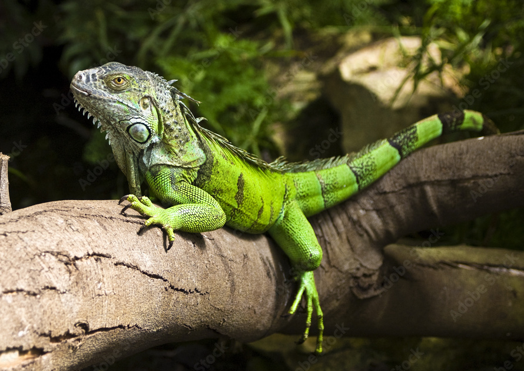
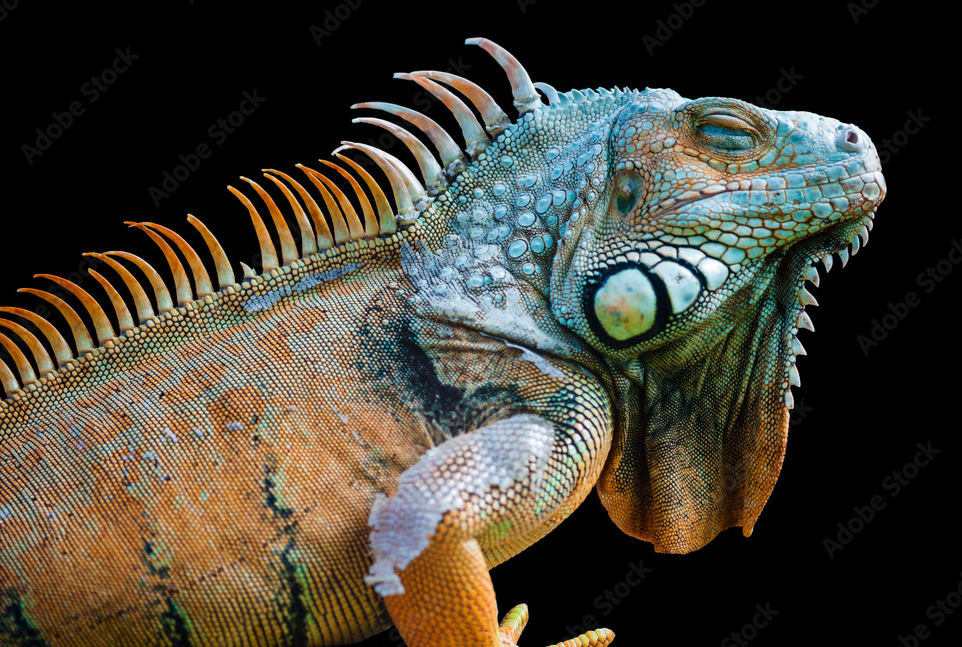
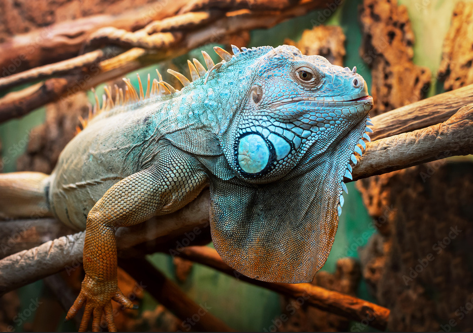

Las iguanas verdes, conocidas científicamente como Iguana iguana, son fascinantes reptiles que habitan principalmente en las regiones tropicales de América Central y del Sur. Su característica más distintiva es su color verde brillante, que les permite camuflarse eficazmente entre la vegetación exuberante de su entorno.
Características
Ojos grandes
Amigables
Cambian de color

